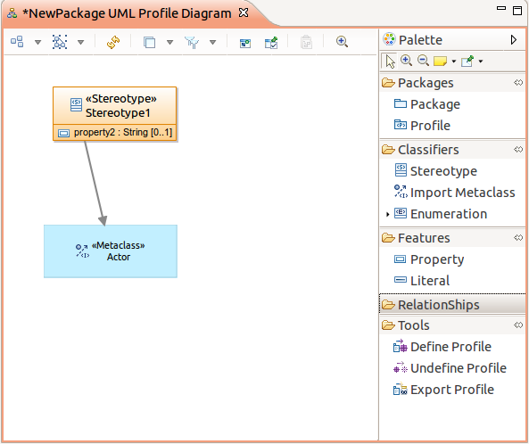
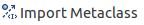

Profile Diagram user guide

Creating a profile
To create a new profile, right_click on a model element in the Model Explorer and select the menu New Representation > Profile Diagram_.
!../images/using_profile_diagram/new_profile_diagrammenu.png!
Another solution is to create a new UML model and select Profile as root element.

Creating a stereotype
A tool is available in the palette to create a stereotype.


By default, a stereotype does not extend any metaclass.
Referencing a metaclass
A tool is available in the palette to import a list of metaclass.


It opens a wizard which proposes all the available UML metaclass:

It is possible to filter the listed metaclass by :
- Name
- Only concrete metaclasses
- Only sub classes of a selected metaclass
Extending a metaclass
A tool is available in the palette to create extensions for a stereotype.

According to the context, this tool will create an Extension edge linking Stereotype to an Element Import or a Generalization edge linking two Stereotypes. An Element Import is an UML reference to an imported metaclass in a profile.
Extra associations
This tool allows the creation of an UML “Association” between two stereotypes.

Furthermore, this tool can suggest to reuse the existing relationship in the metamodel UML, if this relationship can link the metaclass referenced by the target and the source stereotype of the wanted association.
If the user selects an existing relationship of the UML metamodel, then the tool will import the metaclass of the selected relationship and create a new stereotype that extend this relationship. Besides, the tool link graphically the new created stereotype and the source and target stereotype of the association

Defining a profile
The palette provides a tool to define a profile in order to be able to apply this one for other UML model in the workspace. This tool add information about the version to the profile as Ecore Annotation. Mainly, the information required for the versioning are:
- Version number
- Date
- Author
- Comment
- Copyright

Another tool is available to undefine a profile, this tool removes all the EPackage representing the definition from the profile.
Exporting a profile
An export profile tool is available from the palette to export a profile as a jar file. This jar can be added to an eclipse platform to provide a profile as a registered package. The export operation creates an EMF project with an ecore file based on the profile model. Then an extension for the profile is added to the generated project (in “uml.generated_package” and “ecore.uri_mapping”). Finally, the tool builds and exports the created EMF project for the profile as a Deployable plug-in.
The tool requires some necessary information for the creation of the deployable plug-in:
- Profile name, which is editable in the profile model.
- Profile URI.
- Profile plug-in name.
- Version information